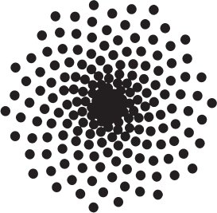
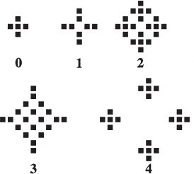

Şu evrene bir bakın. Ne muazzam bir canlı vetertipli, duyarlı ve faal varlıklar kalabalığı! Ama bir de bu canlı varlıkları biraz yakından inceleyin... Birbirlerine karşı ne kadar düşmanca ve yıkıcılar! Kendi mutlulukları içinde yaşayıp gitmek nasıl da yetmiyor hiçbirine!
— David Hume
PALEY'İN SAATİ
Tanrı'nın varlığını destekleyen kanıtlamalar arasında belki de en tanınanı "tasarımdan yola çıkan kanıtlama" dır. Boşlukların Tanrısı kanıtlamasının en bilinen biçimini temsil eder: Evren, özellikle de Dünya üzerinde canlı organizmalar, düşünülebilir herhangi bir doğal mekanizmayla meydana getirilemeyecek kadar karmaşıktır.
Bilim çağından önce dini inanç, imana, kültürel geleneğe ve Tanrı tarafından özellikle seçilmiş kutsal kadın ve erkeklerin öğretileriyle kutsal kitaplarda vahyedilen hakikatlere duyulan güvene dayanıyordu. Bilim, düz bir Dünya'nın yıldızlar ve gezegenlerin semasının merkezinde hareketsiz durduğu gibi birçok geleneksel öğretinin yanlışlığını göstererek bu inanışları aşındırmaya başlayınca insanlar da, Kutsal Kitap'ın ya da tanrısal vahiyin kelimesi kelimesine hakikati ifade ettiği varsayımına bağlı kalmadan yüce bir varlığa ilişkin deliller bulmak için bizzat bilime bakmaya başladılar.
Doğanın gözlemlenmesinin tek başına Tanrı'nın varlığına ilişkin deliller sağladığı anlayışının uzun bir tarihi vardır. Bunun belki de en parlak serimlenmesi Anglikan başpapaz William Paley'nin (ö. 1805) çalışmalarında bulunur. Paley ilk basımı 1802 yılında yapılan Natural Theology or Evidences of the Existence and Attributes of the Deity Collected from the Appearance of Nature[33] adlı kitabında bir çalılıktan geçerken bir taş ile bir saat bulmasından bahseder. Taşın doğanın basit bir parçası olduğunu kabul etsek bile, saatin zamanı göstermesi için tasarlanmış, yapay bir nesne olduğuna hiç kimse karşı çıkamaz. Paley bundan hareketle insan gözü gibi doğal nesnelerin ustalıkla tasarlanmış düzenekler olduklarına dair her türlü belirtiyi taşıdıklarını iddia etmiştir.
Paley'in kanıtlaması günümüze kadar kullanılmış ve hâlâ kullanılmaktadır. Bu satırları yazmamdan sadece birkaç hafta önce iki Yehova Şahidi kapımı çaldı. Ben nazikçe kuşkularımı ifade ettiğimde biri derhal, "Farz edin ki bir saat buldunuz..." diye başladı. Tasarım kanıtlamaları ne ölür ne kaybolur...
Tasarımdan kalkan kanıtlamanın inceltilmiş modern biçimlerine, birçok biyolojik sistemin doğal yollarla ortaya çıkamayacak kadar karmaşık olduğunu öne süren günümüzün akıllı tasarım adlı hareketi içinde rastlanır. Aynı şekilde tasarımdan kalkan kanıtlama sınıfına giren bir diğer güncel kanı da fizik yasalarının ve sabitlerinin evrenin yaşamı barındıracak şekilde işleyebilmesi için "ince ayarlı" olduğu iddiasıdır. Buna genel ama yanıltıcı olarak antropik ilke adı verilir. İnançlılar sıklıkla uzay, zaman ve maddenin dünyasını aşan yüce bir varlığın müdahalesi olmadan evrenin nasıl ortaya çıkabileceği, niçin hiçbir şeyin değil de bir şeyin varolduğu, doğa yasaları ve insan aklının nasıl ortaya çıkabildiği sorularını sorarlar. Bu ve sonraki bölümlerde bilimin bu sorulara verdiği yanıtları göreceğiz.
DARWİNİZM
Charles Darwin (ö. 1882) 1827 yılında din eğitimi almak üzere Cambridge Üniversitesi'ne bağlı Christ's College'a girdiğinde kendisine yetmiş sene önce William Paley'nin kaldığı oda verildi.[34] Paley'nin çalışmaları o dönemde müfredatta yer alıyordu ve Darwin bu çalışmalardan çok etkilendi. Paley'nin 1794'te kaleme aldığı A View of the Evidences of Christianity adlı incelemesini baştan aşağı ezbere yazabileceğini ve Natural Theology adlı eserinden "Eukleides'ten aldığı kadar zevk aldığını" söyleyecekti.[35]
Ama Paley'ye yanıt veren ve Copernicus'un Dünya'yı evrenin merkezinden etmesinden sonra dini inanca en büyük darbeyi indiren Darwin oldu. Bu keşfi Darwin'i derinden üzdü ama aynı zamanda onu nereye götürürse götürsün ve sonuçları ne olursa olsun delillerin peşinden giden biliminsanının en büyük örneklerinden biri yaptı.
Aslında bizzat Darwin'in büyükbabasının da önemli bir taraftarı olduğu evrim fikri Darwin'den önce de ortalardaydı. Ama o zamana kadar hiç kimse işin içindeki mekanizmayı hakkıyla betimleyememişti. Darwin'in 1859 tarihli ünlü eseri Türlerin Kökeni'nde[36] ve ondan bağımsız olarak Alfred Russel Wallace tarafından[37] önerilen mekanizma, organizmaların hayatta kalmak için değişim geçirdikleri ve yeni özellikleri soylarından gelenlere aktardıklarını söyleyen doğal seçilimdi. Aslında Darwin, Wallace ona kendi fikirlerini yazıp onunkileri de yayınlaması için zorlayana dek buluşunu yirmi yıl boyunca kendisine saklamıştı. Darwin'in çalışması çok daha anlaşılırdı ve kazanacağı büyük takdiri fazlasıyla hak ediyordu.
Bugün doğal seçilim sürecini hücrelerin DNA'sında taşınan genetik bilgi ve bu bilginin rastlantısal mutasyonlarla nasıl değiştirildiği üzerinden anlıyoruz. Buradaki amacım evrimin yeni bir sunumunu yapmak değil. Çıkışından bu yana birçok gelişmeyle güncellenen Darwin'in teorisi bugün modern biyolojinin temelinde yer alır. Doğal seçilim yoluyla evrim, biyologlar ve bilim insanlarının çok büyük bölümü tarafından gözlemlenmiş bir olgu olarak kabul edilir ve tıp dahil modern hayat bilimlerinin her alanında kullanılır. Darwinci evrim teorisi, tüm doğal bilimlerde uygulanan aynı sıkı deneysel delil standartları uyarınca birçok kritik sınamayı geçmiş sağlamca tesis edilmiş bir teoridir.
Evrim karşıtlarının sıkça başvurduğu argümanlardan biri, onun elektromanyetizma veya termodinamik gibi "gerçek" bir bilimsel teori olmadığıdır. Bu kimseler hatalı bir şekilde evrimin sınanabilir öngörülerde bulunmadığını ve dolayısıyla yanlışlanabilir olmadığını iddia ediyorlar. Oysa evrim açık öngörülerde bulunan yanlışlanabilir bir teoridir.
Darwin'in özgül öngörülerinden biri, insanlığın tanınabilir atalarının Afrika'da bulunduğudur. Bu büyük oranda doğrulanmıştır. Evrim teorisi ayrıca, anti-viral veya anti-bakteriyel etmenlerin kullanılışının dirençli soyları ortaya çıkardığı öngörüsünde bulunmuştur. Bu ilke çağdaş tıbbın ana dayanak noktasıdır. Paleontologlar balıklardan amfibiyenlere evrim gösteren türlere ilişkin delillerin Devon jeolojik dönemine ait katmanlarda bulunacağını başarıyla öngörmüşlerdir.
Birçokları yanı sıra bu örnek, yaratılışçıların sıklıkla gündeme getirdiği "ara-formların" (herhalde ara geçiş türleri kastediliyor) var olmadığı iddiasını çürütmektedir. Paleontologlar, kara memelilerinden balinalara geçiş bulmayı yıllardır zaten bekliyordu. Geçtiğimiz on yıldaki bilimsel yayınlar ve medya bu buluşlarla doludur. Yüzlerce ara geçiş türü örneği basit bir internet aramasıyla bulunabilir.
Bu öngörülerin çoğunun başarısızlığa uğraması evrimi yanlışlardı. Ama başarısızlığa uğramadılar. Evrimi yanlışlayabilecek başka yollar da kolayca düşünülebilir. Örneğin, geçerli fosil kayıtlarının dışındaki yerlerde organizma kalıntıları bulunsaydı evrim yanlışlanmış olurdu. Trilobitler, krinoitler ve soyu tükenmiş mercanlarla ilintilendirilen Paleozoik katmanlarda memeli (at, insan veya su aygırı) kalıntıları bulunduğunu varsayalım. Böyle bir durum evrimsel sürecin var olmadığını kanıtlardı. Ama bu türden tutarsızlıklar bulamıyoruz.
Benim gözde örneğim yüz yıllık. On dokuzuncu yüzyılda yayınlanmasından kısa bir süre sonra Lord Kelvin evrim teorisine karşı çıktı; onun termodinamik hesaplamalarına göre dünyanın yaşı, doğal seçilimin çalışamayacağı kadar gençti. Darwin bunu, teorisine yönelik en önemli meydan okuma olarak gördü.
Ama o dönemlerde nükleer enerji henüz bilinmiyordu. Bu yeni enerji biçimi yirminci yüzyıl başlarında keşfedilince Kelvin ve diğer fizikçiler, güneşin merkezindeki nükleer tepkimelerin saldığı enerjinin, güneş ve diğer yıldızların milyarlarca yıl boyunca sürecek güvenilir enerji kaynakları olmalarını sağladığını fark ettiler. Aslında evrimin böyle bir enerji kaynağının varlığını öngördüğü bile söylenebilir. Kelvin nükleer enerjiyi öğrenir öğrenmez son derece zarif bir tavırla evrime itirazını geri çekti.
Bu kitapta defalarca göreceğimiz üzere, Tanrı'nın varlığına yönelik bilimsel kanıtlamaların bazıları bir zamanlar belli bir güce sahipti. Ancak yakın zamanda –geçen yüzyıl içinde– biriken bilgiler bu akıl yürütmeleri sadece elemekle kalmadı, birçoğunu da Tanrı karşıtı tezlerden yana döndürdü. Bu örnekler, bilimin Tanrı hakkında söyleyecek sözü bulunmadığı iddialarını açıkça çürütmektedir. Tanrı'nın varlığını onayabilecek, Dünya'daki yaşamın ve evrenin gözlemlenmesine dayanan pek çok senaryo hayal edilebilir; biz bu kitapta bunların birkaçına bakacağız.
İnsanın atalarının, insanlarla diğer hayvanlar (hatta bitkiler) arasındaki DNA ve anatomik bağlantıların keşfedilmesi ve tıbbi araştırmalarda hayvanların kullanılışı, insanları ayrı bir yaşam formu olarak yaratan Tanrı hipotezini yanlışlamaktadır. Fosil kayıtları, ara geçiş türlerinin varlığı ve evrimin laboratuvar ortamında gözlemlenmesi, tarihin bir noktasında farklı yaşam formları türleri yaratıp bunları o noktadan itibaren aynı bırakan bir Tanrı hipotezini yanlışlamaktadır.
Birçok inanan evrimle inançları arasında çatışma görmemektedir. Sonuçta Tanrı, istediği her şeyi yapabilir. Yaşamı evrim yoluyla yaratmayı istemişse, evrim yoluyla yaratmıştır. Ancak diğerlerinin evrimi, insan yaşamının amaçlı, ilahi yaratılışına yönelik inançlarına bir tehdit olarak görmek için sağlam nedenleri vardır.[38] Çünkü evrim insanın, geleneksel öğretinin varsaydığı gibi, özel bir mahluk değil, bir kaza olduğu imasını taşır. Birçok kişi bu durumu kabullenilemez buluyor ve eldeki delillere rağmen evrimin yanlış olması gerektiği sonucuna varıyor.
Ancak eğer bilgide hakemlikte eski batıl inançlardan ziyade bilime güveneceksek tam tersi sonuca varmak kaçınılmazdır. Evrim, en basit ilk formlardan yaşamın gelişimi sürecindeki her bir adımda Tanrı'nın işe dahil edilmesi gerektiğini ortadan kaldırmaktadır. Öte yandan evrim yaşamın kökenini açıklamadığı için oradaki boşluk varlığını sürdürmektedir. Bu durum bazı inananların inançlarıyla evrim arasındaki tutarlılığı sürdürmesi için yetersizdir, çünkü evrim özellikle aynı anda yaratılmış değişmez yaşam formlarına dair Kutsal Kitap anlatısına kökünden ters düşmektedir. Dahası elimizde yaşamın tamamen maddi olan bir kökeni olduğu sonucuna varmamak için hiçbir neden yoktur.
YARATILIŞÇILAR
Aşırıdan ılımlıya doğru sıralanabilecek birçok yaratılışçı bakış açısı bulunsa da onlarda birkaç baskın eğilimi saptayabiliyoruz. Yakın tarihe bir bakalım: Creationists adlı kitabın yazarı Ronald Numbers'a göre yaratılışçılık terimi başlangıçta anti-evrimciliğin her biçimi için kullanılan bir terim değildi.[39] Evrim karşıtları her zaman aynı, birleşik bir yaratılışçı bakış açısına bağlı değillerdi. Ancak 1920'lerden itibaren, Kutsal Kitap'taki yaratılış öyküsü ABD'de evrime karşı standart alternatife ve yaratılışçı hareket de bu anlatının en önde giden savunucusuna dönüştü.
İçinde bulunduğumuz on yıllık dilimdeyse ABD'de savaşın ön cephesini Hıristiyan köktenciler ele geçirmiştir. Bu grubun etkisiyle üç eyalet (Tennessee, Mississippi ve Arkansas) evrimin öğretilmesinin suç olduğunu ilan etmiştir. Oklahoma'da evrimi destekleyen ders kitaplarına yasak getirilirken Florida'da Darwinizmin öğretilmesi "yıkıcı faaliyet" olarak kabul edilmiştir.
1925 yılında biyoloji öğretmeni John Scopes'a evrimi öğrettiği için Tenessee eyaletinin Dayton kentinde görülen bir dava açıldı. Bu suçlama, demokratların başkanlık seçimlerinde üç defa yenilgiye uğramış adayı William Jennings Bryan'a karşı savunmayı Clarence Darrow'un üstlendiği ünlü "Maymun Davası"na varmıştır. Sonunda Scopes hüküm giyse de (mahkûmiyet kararı temyizden sonra kalkmıştır) sinemaya Rüzgârın Mirası adıyla aslından biraz farklı bir şekilde aktarılmış bu dava Darwinciler için hâlâ bir halkla ilişkiler zaferi olarak kabul edilmektedir.
Yeni bir yaratılışçılık anlatısı, Yedinci Gün Adventistleri'nin önderi George McCready Price'ın çabalarından derinden etkilenmiş teolog John C. Withcomb Jr. ve hidrolik mühendisi Henry M. Morris'in yazdığı Yaratılış Tufanı[40] adlı kitapla ortaya çıktı. Kitapta bilimin Yaratılış ile bağdaşabilir olduğu savunuluyordu. Bu çalışmada öne sürülen bilimsel iddialar hiç de güvenilir olmamasına rağmen Hıristiyanlar, nefret ettikleri Darwinizmle savaşlarında yeni bir stratejinin çıktığını fark eder etmez ona dikkat kesildiler. 1970'lerde Morris Yaratılış Bilim Enstitüsü'nü kurdu ve buradan, devlet okullarının bilim derslerine sunulacak yeni "yaratılış bilimi"ni sahiplenen bir hareket doğdu. Biyokimyacı Duane Gish, enstitü adına ülkeyi dolaşarak konuşmalar yaptı ve pek çok saf biyologu kalabalık, kilise-müdavimi izleyici kitleleri karşısında yapılan tartışmalarda tuzağa düşürdü. Arkansas ve Louisiana eyaletlerinde, evrimle birlikte yaratılış biliminin öğretilmesini zorunlu kılan yasalar çıktı.
1982 yılındaysa Arkansas'ta bir federal yargıç, "yaratılış bilimini" bilim değil, din sayarak yasayı iptal etti.[41] 1989'da Yüksek Mahkeme Louisiana yasasının anayasaya aykırı olduğunu karara bağladı.
Bu dönemde yaratılış bilimi iki ana kola ayrıldı. Bunlardan biri İncil'in genç Dünya resmine harfiyen bağlı kalırken diğeri en azından eğitimsiz gözlere yerleşik bilimle tutarlı gibi görünen daha incelikli kanıtlamalar kullanmaya çalıştı. Bu ikinci grup, akıllı tasarım (AT) denilen sinsi bir yeni yaratılışçılık anlayışı geliştirdi.
AKILLI TASARIM HANÇERİ
Yaratılışçı bilim insanlarının hatalarından ders alan AT destekçileri dinsel motiflerini anayasal sorunlardan uzak tutacak şekilde (ama şu ana dek pek başarı gösteremeden) önemsizmiş gibi gösterme yoluna gittiler. Ayrıca genç-Dünya yaratılışçılarının berbat bilimsel hatalarından kaçınarak bu yeni yaratılışçılık biçimini "saf bilim" olarak sundular. Doğadaki tasarımın tek başına doğal süreçler yoluyla ortaya çıkamayacağının bilimsel olarak gösterilebileceğini ve ispatlanabileceğini iddia ettiler.[42]
Filozof Barbara Forrest ve biyolog Paul Gross, Creationism's Trojan Horse: The Wedge of Intelligent Design [Yaratışçılığın Truva Atı: Akıllıl Tasarım Hançeri] adlı kitaplarında yeni yaratılışçılığın Discovery Institute adlı, sağlam para kaynağına sahip, tutucu bir Hıristiyan örgütü tarafından nasıl beslendiğini ayrıntılarıyla anlattılar.[43] Bu örgütün, Forrest ve Gross'un belgelediği amacı, "bilimsel maddeciliği ve onun yıkıcı ahlaki, kültürel ve siyasal mirasını yok etmek" ve bilim ile kültürü evanjelist Hıristiyan çizgide "yenilemektir."
BEHE'NİN İNDİRGENEMEZ KARMAŞIKLIĞI
Akıllı tasarım savunucularının iddialarından hiçbiri, özellikle de önde gelen teorisyenleri biyokimyacı Michael Behe ve teolog William Dembski'nin çalışmaları, bilimin sıkı tetkikleri karşısında ayakta duramamıştır. Bu iddialar pek çok kitap ve makalede ayrıntılı bir şekilde çürütülmüştür.[44] Kanıtlamalarındaki kusurlar gösterilmekle kalmamış, birçok örnekte onların dayandıkları olgusal iddiaların yanlış olduğu da ispatlanmıştır. Söz konusu çalışmaların hiçbiri kendilerine saygın bilimsel yayınlarda yer bulamamıştır.[45]
Behe'nin şöhreti 1996 tarihli Darwin's Black Box: The Biochemical Challenge to Evolution [Darwin'in Kara Kutusu: Evrime Biyokimyasal Meydan Okuma] adlı popüler kitabına dayanır.[46] Behe bu kitabında, birçok etkileşimli parçadan oluşan ve içindeki parçalardan herhangi biri kaldırıldığında işlevini yitiren sistemleri tanımlamak için indirgenemez karmaşıklık kavramını ortaya attı. Behe'nin argümanına göre, bireysel parçalar doğal seçilimle evrimleşmiş olamazlar, çünkü onlar doğal seçilimin seçeceği işleyen bir göreve sahip değildir.
Evrimci biyologlar sistem evrimleştikçe işlevlerini değiştiren organik sistemlerin doğadaki örneklerinin uzun bir listesini çıkararak Behe'nin argümanını tamamıyla çürüttüler.[47] Behe'nin sunduğu ve birçoğunu Behe yazmadan önce de zaten (Behe hariç) herkesin çok iyi bildiği her örneği açıklayan akla yatkın doğal mekanizmalar önerdiler.
Canlı sistemlerin parçalarının evrimin seyri içinde işlev değiştirmesi evrimin, Behe ve diğerlerinin göz ardı etmeyi yeğlediği, iyi tesis edilmiş olgularından biridir. Biyolojik parçalar sıklıkla doğal seçilim yoluyla tek bir işleve dayalı olarak evrim geçirirler ve ardından sistem evrildikçe tedrici olarak diğer işlevlere uyum sağlarlar.
Biyoloji literatüründe, zarif ve özenli bir mühendisliğin eseri olmaktan ziyade önceden var olan yapının modifikasyonundan ortaya çıkan pek çok organ ve biyolojik yapı örneği bulunur. Paleontolog Stephen Jay Gould pandanın başparmağına dair verdiği harika örnekle bu noktayı vurgulamıştır.[48] Pandaların görünürde altı parmağı vardır ama altıncı "parmak" aslında bir parmak değil, pandanın tek besini bambuları kavramada kolaylık sağlamak üzere bilekten uzamış bir kemiktir.
Evrimci bir biyolog değil bir biyokimyacı olan Behe kitabını yazarken "indirgenemezce karmaşık" sistemlerin evrimine dair mekanizmaları Nobel Ödülü sahibi Hermann Joseph Muller'in altmış yıl önce zaten tartıştığından ve bunun o zamandan beri bu alanda ortak bir bilgiye dönüştüğünden habersizdi.[49] Behe'yi basitçe boşlukların Tanrısı tuzağına düştüğü için bile affetmek mümkün değildir. O bir boşluk bile bulamamıştır.
GÖZ
Şimdi, Paley'den bu yana yaratılışçıların sıklıkla kullandığı insan gözü örneğine bakalım. Esas olarak çağdaş bir evrimci biliminsanının Paley'ye yanıtı olan Kör Saatçi adlı kitabında zoolog Richard Dawkins'in belirttiği gibi, göz tüm omurgalılarda tersine tellenmiştir; her ışık toplayıcının teli ters yönde, ışığa en yakın yerden çıkar, ağtabakanın yüzeyinden geçer, ağtabaka üstünde "kör nokta" dediğimiz deliğe girer ve burada görme siniriyle birleşir.[50] Ahtapot ve mürekkep balıkları gibi diğer hayvanlarda ise gözler daha "mantıklı" olarak tellenmiştir.
Bu durum sıklıkla açık bir "kötü tasarım" örneği olarak kullanılır. Ancak biyolog (ve koyu Katolik) Kenneth Miller, bu düzenlenmenin gayet iyi işlediğinden hareketle bunun adil bir betimleme olmadığını düşünür. O omurgalılarda gözün nasıl evrim geçirdiğini güzelce göstermiştir.[51] Gözün retinası, beynin tedrici olarak ışık hassasiyeti geliştiren dış katmanının bir modifikasyonu olarak evrimleşmiştir. Göz ne iyi ne de kötü tasarlanmıştır. Tasarlanmamıştır çünkü.
Gözün evrim boyunca bağımsız olarak en az kırk kez gelişmiş olması yaşamsal önemini açıkça ortaya koyar.[52] Hepsi genetik ve moleküler seviyede benzerlik göstermekle birlikte sinirbilimi ışığın toplanması ve odaklanması sorunu için sekiz ayrı çözüm belirlemiştir.[53] Fizik ve kimya aynıdır; fotonları algılamanın birkaç yolu vardır. Ama karmaşık sistemlerin evriminde şans ve yerel çevrenin oynadığı önemli rol yüzünden, evrimin izin verdiği çeşitli yolların tesadüfi örneklenmesiyle sorunun farklı çözümleri ortaya çıkmıştır. Kısacası gözlerin yapıları, eğer tümüyle maddi ve zihinden yoksun süreçler (şans artı doğal seçilim) yoluyla gelişselerdi görünmelerinin bekleneceği gibi görünmektedir – çünkü bu süreçler mümkün hayatta kalma çözümleri uzayını araştırırlar.
DEMBSKI'NİN BİLGİSİ
Behe bugüne dek sadece bir kitap yazmışken, Discovery Institute'ten meslektaşı William Dembski'nin, akıllı tasarım üzerine yazdığı birçok kitap ve makaleyle oldukça üretken olduğu söylenebilir.[54] Dembski, doğadaki tasarımın matematiksel yoldan gösterilebilir olduğunu iddia eder. Kanıtlamalarını hayli teknik ve sıklıkla da muğlak bir dille ifade ettiğinden anlaşılmaları ve değerlendirilmeleri belli bir uzmanlık gerektirir. Neyse ki birçok uzman Dembski'nin çalışmalarını özenle inceleme zahmetine katlanmıştır. Sonuçta bu çalışmaların neredeyse hemen hepsinde büyük kusurlar saptanmıştır.[55] Ben burada, tıpkı Behe'nin görüşlerinde olduğu gibi, Dembski'nin önermelerinin de kanıtlanabilir yanlışlığına dair sadece tek bir örnekten söz edeceğim.
Dembski (dinsel motifini gizlemediği) Intelligent Design: The Bridge between Science and Theology' [Akıllı Tasarım: Bilim ve Teoloji Arasındaki Köprü] adlı popüler kitabında "Birlikte işleyen şans ve yasa bilgiyi yaratamaz,"[56] der. Bunu da Bilginin Korunması Yasası diye adlandırır.
Bilim Tanrı'yı Buldu mu? adlı kitabımda bu "yasayı," Dembski tarafından uyarına göre ve biraz muğlak bir şekilde kullanılan bilginin niceliksel tanımının basitçe negatif entropiye eşit olduğunu göstererek çürütttüm.[57] Fizikte düzensizliğin niceliksel ölçüsü olan entropi (dolayısıyla negatif entropi ya da düzenle ilgili bilgi) enerji gibi korunan bir nicelik değildir. Aslında, "açık" bir sistemin (çevresiyle enerji alışverişinde bulunarak etkileşen bir sistemin) entropisi artabilir veya azalabilir. Dünya üzerindeki canlı sistemler kesinlikle açık sistemlerdir. Gerçekten de bir canlı organizma düzeni sürdürmek için dış enerji kaynaklarını kullanışıyla termodinamik dengeden uzak kalır.
BUGÜNÜN SİYASİ KAVGASI
Akıllı Tasarım, Darwinci doğal seçilimi kendi inançlarıyla bağdaştıramayan inananlar arasında taraftar bulmaya devam ederken, değişik inançlardan ve inançsız birçok biliminsanı ezici bir çoğunlukla akıllı tasarımın iddiasını bilimsel olarak ortaya koyamadığı görüşündedir. ABD'deki bütün temel bilim toplulukları evrimi destekleyen ve akıllı tasarımı reddeden bildiriler yayınlamışlardır. Behe'nin Lehigh Üniversitesi'ndeki kendi bölümü de bunlardan biridir:
Biyoloji Bilimleri Bölümü fakültesi en yüksek bilimsel bütünlük ve akademik işlev standartlarına bağlıdır. Bu bağlılık akademik özgürlük ve serbest bilgi alışverişine sarsılmaz destekle birlikte yürür. Ayrıca bu bağlılık, bilimsel yönteme en yüksek düzeyde saygıyı, araştırmaların yürütülmesinde doğruluğu ve herhangi bir bilimsel modelin geçerliliğinin sadece rasyonel hipotez sınanmasının, sağlam deneylerin ve başkalarınca tekrarlanabilir bulguların bir sonucu olduğunun tanınmasını gerektirir.
Bu yüzden bölüm fakültesi, kökleri Charles Darwin'in yeni ufuklar açan çalışmasında bulunan ve 140 yıldan beri elde edilen bulgularca desteklenen evrim teorisini desteklemektedir. Bu bildirinin tek muhalifi Prof. Michael Behe, "akıllı tasarım"ın iyi bilinen bir savunucusudur. Bizler Prof. Behe'nin görüşlerini ifade etme özgürlüğüne saygı duymakla birlikte, söz konusu fikirler sadece kendisine aittir ve bölüm tarafından hiçbir şekilde onaylanmamaktadır. Akıllı tasarımın bilimsel bir temelinin bulunmadığı, deneysel olarak sınanmadığı ve bilimsel bir görüş sayılmaması gerektiği ortak görüşümüzdür.[58]
Denbski bu protestolar arasında, dünyanın en büyük Baptist üniversitesi Baylor Üniversitesi'nden ayrılarak Güney Baptist Teoloji Yüksekokulu'na geçmiştir.[59] Baylor ve diğer Hıristiyan üniversitelerindeki pek çok akademisyen akıllı tasarımın kendi dinsel inançlarına saygın bir destek sağlamadığının farkına varmıştır.[60]
Bilimsel ortamlardan çok siyasi arenada yürütülen akıllı tasarım tartışmaları payına düşen hukuk davalarını da üretmektedir.[61] 2005 Aralık'ında Pennsylvania'nın Dover kentindeki bir federal mahkemede görülen dünya çapında dikkat çeken bir davada mahkeme akıllı tasarımın dinsel saikler barındırdığını ve bu yüzden okulların bilim derslerinde yer almasının anayasaya aykırı olduğunu karara bağlamıştır.[62] Bu karar akıllı tasarıma vurulan öldürücü bir darbe gibi görünebilir; ama aslında evrimi destekleyen çoğu bilimsel topluluğun ve diğerlerinin dikkatinden kaçan incelikli bir nokta vardır.
Dover'daki davada Yargıç John E. Jones III, kamu okullarının bilim derslerinde akıllı tasarım (AT) okutulmasının kilise ve devletin anayasayı ihlal etmesi olduğu hükmüne varmıştı. Bu dava daha önce bahsettiğimiz 1982 tarihli McLean-Arkansas davasının bir yansımasıdır.
Her iki davada da yargıçlar kararlarında gerekenden ileri gitmiştir. Jüri üyeleri (Yargıç Jones'un karar açıklamasında belirttiği gibi bir hükme varmak için tek başına yeterli olan) yaratılış bilimi ve AT'nin devletin dinle anayasaya aykırı bir şekilde karıştığı kararına varmakla kalmamış, bir de bu ikiliye "bilim değildir" yaftasını yapıştırmıştır. Bu durumda da, ne olduğu konusunda ne bilim insanlarının ne de filozofların görüş birliğine varabildiği bilimi tanımlamak zorunda kalmışlardır.
Arkansas'taki davada Yargıç William R. Overton, ağırlıklı olarak filozof Michael Ruse'un tanıklığına dayanarak bilimi şöyle tanımlamıştı:[63]
(1) Kılavuzu doğa yasalarıdır;
(2) Doğa yasalarına başvurularak açıklanmak durumundadır;
(3) Deneysel dünyayla sınanabilirdir;
(4) Sonuçları, nihai karar olmaması anlamında geçicidir;
(5) Yanlışlanabilirdir.
O dönemde çalıştığım Hawaii Üniversitesi'nden meslektaşım saygın filozof Larry Laudan, yıllardan beri "ayrım sorunu" –bilim ile bilim olmayan arasına sınır çekme sorunu– üzerine çalışıyordu. Arkansas'taki davanın kararı açıklandığında Laudan buna şiddetle itiraz ederek yaratılış biliminin aslında sınanabilir, geçici ve yanlışlanabilir olduğuna işaret etti. Örneğin, diyordu, yaratılış bilimi gerçekte zaten yanlışlanmış olan "genç Dünya" ve diğer jeolojik olgular öngörmüştü. Yanlışlanmış bilim hâlâ bilimdir ama yanlış bilimdir. Laudan Arkansas'ta alınan bu kararın "bilimin ne olduğuna ve nasıl işlediğine dair yanlış bir önyargıyı sürekli ve kutsal kılmak suretiyle" bilimin başına bela olacağı uyarısında bulunuyordu.[64]
Bugüne geldiğimizde akıllı tasarımın da aynı şekilde sınanabilir, geçici ve yanlışlanabilir olduğunu görüyoruz. Yukarıda belirttiğimiz gibi, önde gelen tasarım teorisyenleri Michael Behe ve William Dembski'nin iddiaları büyük oranda çürütülmüştür, bazı örneklerde de yanlışlanmıştır.
Dover Eğitim Kurulu'nun AT uygulamasının bilim kisvesi altında sekter bir yaratılış görüşünü anayasaya aykırı biçimde eğitime sokuşturma girişimi olduğuna ilişkin kararı tartışmıyorum. Ayrıca AT'nin gerçek bilimden çok sahte bilimin her türlü işaretini taşıdığında da hemfikirim.
Yargıç Jones kararını, AT'nin bilim sayılması için bilimin temel kurallarının doğaüstü güçleri göz önüne almaya izin verecek şekilde genişletilmesi gerektiğine dair iki taraftan tanık ifadelerine ve Arkansas davasının emsal kararına dayandırmıştı. Bu tavır, 1. bölümde bahsettiğim nedenlerden dolayı hem akıllıca değildir hem de yanlıştır. Akıllıca değildir çünkü bu karar doğrudan bilimi, evrende doğadışı öğelerin bulunabileceği olasılığını reddettiği için dogmacılıkla suçlayanların eline koz verir. Yanlıştır çünkü bilimin doğaüstü nedenleri göz önüne alması yasak değildir. Dahası, bazı saygın bilim insanları tam da bunu yapmaktadır.
ÖZ-ÖRGÜTLENME
Akıllı tasarım yandaşları sıklıkla "400 biliminsanı"nın akıllı tasarıma destek veriyor görünen bildirisine atıfta bulunurlar. Bu bildiri kelimesi kelimesine şöyledir: "Yaşamın karmaşıklığının rastgele mutasyon ve doğal seçilim yoluyla açıklanabileği yönündeki iddialar konusunda kuşkuluyuz. Darwinci teoriyle ilgili delillerin dikkatle incelenmesi teşvik edilmelidir."[65]
Bildiride "akıllı tasarım" ibaresinin geçmediğine dikkat ediniz. Aslında bu bildiri, her zaman makul bir bilimsel tavır olan ılımlı bir kuşkuculuk ifadesi ve Darwin'in teorisiyle ilgili delillerin özenle incelenmesine yönelik gereksiz bir çağrıdır. Gereksizdir çünkü yapılması istenen şey, Darwin'in Beagle gemisiyle çıktığı yolculuktan beri zaten evrim biliminde bir kural olagelmiştir. Gerçekten de, Darwin'in çalışması ampirik ve teorik bilimin en iyi, en şiddetle sınanmış örneklerinden biridir.
Öte yandan evrim mekanizmasında rastlantısal mutasyon ve doğal seçilimden daha fazlasının olması sahiden mümkündür, ama bu akıllı tasarım değildir. Karmaşık maddi sistemler öz-örgütlenme adı verilen katışıksız doğal bir süreç sergilerler ve bu süreç hem canlı hem cansız sistemlerde mevcut görünmektedir.
Philip Ball, çok hoş resimlenmiş The Self-Made Tapestry adlı kitabında, zihinden yoksun doğal süreçlerin etrafımızda gördüğümüz karmaşık dünyayı açıklayamayacağı sanrısını hâlâ taşıyanlar için sağlam bir panzehir olabilecek doğadaki örüntü oluşumuna ilişkin pek çok örnek verir.[66] Biyolojik sistemlerde gözlemlenen birçok örüntünün cansız sistemlerde de bulunduğu ve temel, indirgemeci fizik terimleriyle anlaşılabileceği olgusu da, hâlâ yaşamın karmaşıklığının açıklanmasının bütünsel veya indirgemeci olmayan özel sistemleri gerektirdiği sanrısı altında olanlar için bir antidot olabilir. Yerel olarak etkileşen parçacıklar dünyasında basitlik kolaylıkla karmaşıklığı doğurabilir.[67] Bütün, parçaların toplamıdır.
Örneğin dikkat çekici gözlemlerden birisi, Fibonacci sayı dizisinin doğada sıklıkla görünmesidir. Fibonacci dizisi, her sayısı kendisinden önce gelen iki sayının toplamına eşit olan bir sayı dizisidir: 0, 1, 1, 2, 3, 5, 8, 13, 21, 34, 55,.... Birçok çiçeğin taçyaprak sayısı bir Fibonacci sayısıdır. Düğün çiçeklerinde beş, kadife çiçeklerinde on üç, yıldız çiçeklerinde yirmi bir taçyaprağı vardır.
Dembski karmaşık özgülleşmiş bilgi adını verdiği şeyin evrendeki görünüşünün "akıllı tasarıma" delil oluşturduğunu göstermeye çalışmıştır. Ona göre basit doğal süreçler karmaşık özgülleşmiş bilgi üretemezler.[68] 1999 tarihli Akıllı Tasarım adlı kitabında, doğada gözlemlendiği takdirde bu bilginin akıllı bir kaynağının bulunduğuna dair delil oluşturabilecek karmaşık özgülleşmiş bilgi türünün bir örneğini verir. Dembski burada, ünlü astronom Carl Sagan'ın aynı adlı kitabından uyarlanmış Contact [Temas] filminden bahsetmektedir.[69]
Filmde astronomlar dünya dışından bir sinyal alırlar ve bunun 2'den 101'e kadar asal sayılardan oluşan bir dizi olduğu anlaşılır. Öyküdeki astronomlar bunu dünya dışı zekânın varlığının delili olarak kabul ederler. Dembski'ye göre, Dünya üzerinde yaşayan birçok canlı ancak dünya veya belki evren dışı zekâ tarafından üretilebilecek bu türden karmaşık özgülleşmiş bilgi sergiler.
Ama Dembski'nin dış uzaydan ilginç bir matematiksel dizi oluşturacak sinyallerin gelmesini beklemesine gerek yoktur. Bunun için bahçesine çıkıp çiçeklerin taç yapraklarını sayması yeterlidir. Pek çok çiçeğin tamamen doğal süreçlerle oluşmuş "karmaşık özgülleşmiş bilgi" sergilediğini görecektir.
Ball'un verdiği örneklerden biri doğada çokça rastlanan çifte sarmal örüntüsüdür. Bitki türlerinin yüzde sekseninde yapraklar gövde üstünde, her biri altındakinden sabit bir açı dönüşüyle ayrılarak spiralleşir.[70] Yukarıdan bakıldığında karşıt yönlerde dönen bir çifte sarmal örüntüsü görülür. Bu çifte sarmal örüntü ayçiçeklerinin kömeçlerindeki çiçekçiklerde (bkz. Şekil 2.1) ve çam kozalaklarının yaprakçıklarında da görülür.
Bu durumda işin içinde belki Darwinci evrim süreciyle bağlantılı biyolojik bir sürecin bulunduğu düşünülebilir. Oysa burada konu basit bir fizik meselesidir: potansiyel enerji minimizasyonu.
1992 yılında Stéphane Douady ve Yves Couder bir yağ filmi üzerine minik manyetik sıvı damlacıkları koydular. Ardından dikey bir manyetik alan uygulayarak damlacıkları polarize ettiler ve birbirlerini itmelerini sağladılar. Bu arada çevre boyunca damlacıkları çeken bir başka manyetik alan uygulandı. Bu işlem sonucunda damlacıkların kendi kendilerini çifte sarmal şeklinde düzenlediklerini gözlemlediler ve böylece sarmal oluşumunun mekanizmasının sırf biyolojik olmaktan ziyade fiziksel olduğunu kanıtladılar.[71]9
Pek çok bilgisayar simulasyonunda bu sonuç yeniden üretilmiştir. Ancak olabildiğince az varsayım kullanarak bunlardan birini bizzat kendim denemeye karar verdim. Elektron gibi elektrik yüklü bir parçacıkla işe başladım ve merkezi parçacıktan artan çaplarda büyüyen çemberlere her defasında bir tane olmak üzere parçacıklar ekledim. Her çemberde potansiyel elektrik enerjisinin minimum olduğu konum olarak bir parçacık yeri seçtim. Şekil 2.2'deki sonucu elde ettim. Burada çifte sarmal örüntüsünün yeniden üretildiğini görüyoruz. Lütfen bu örüntünün, bir nokta parçacığını çevreleyen potansiyel enerjinin küresel olarak simetrik olduğu durumda yalnızca total potansiyel enerjinin minimize edilmesi için kullanılan algoritmanın içine yerleştirilmediğine dikkat ediniz.
Bu basit bilgisayar programıyla, kendiliğinden simetri kırılması denilen süreci gösterdim; burada bir sistemin simetrisi doğal yoldan, yani sistemin üzerinde asimetrik bir mekanizmanın zorlaması olmadan kırılır. Kendiliğinden simetri kırılmasının önemini, tasarımın yokluğunda evrendeki yapı oluşumunun nasıl olduğundan bahsettiğimizde göreceğiz.
Biyolog Stuart Kauffmann, uzun zamandan beri, yaşamın evriminde doğal seçilimin tek başına yeterli olmadığını ve öz-örgütlenmenin sanıldığından daha büyük bir rol oynadığını savunmaktadır.[72] Kauffman yaşamın kökeninde katalitik kapanma adıyla bilinen kimyasal bir sürecin olduğunu önerir ve bunu kendi kendini idame ettirebilir hale gelen birbirine bağlı bir kimyasal tepkimeler ağı olarak görselleştirir. Kauffman öz-örgütlenmenin yeni, bütüncül [holistik] bir doğa yasası olduğunu ima ediyor görünse de, aslında bunun için temel, tümüyle indirgemeci fizik ve kimya dışında hiçbir şeye gerek yoktur.
Evrim teorisi yaşamın kökenini açıklamaz. Burada işe öz-örgütlenme türünden prebiyolojik bir süreç karışmış olmalıdır. Halihazırda bu, güncel bilimdeki bir boşluktur ama Kauffman'ın önerdiği gibi makul doğal mekanizmalar Tanrı'yı resmin dışında bırakmaya yeterlidir.
Şekil 2.1 Bir ayçiçeğinin kömecindeki çiçekçiklerin çifte sarmal örüntüsü.
Fotoğraf: John Stone

Şekil 2.2 Potansiyel enerjiyi minimize eden parçacıkların dağılımı. Bitkilerde çokça görülen çifte-sarmal örüntüsü yeniden üretilmiştir.
BASİT KURALLAR
Son yıllarda bilgisayar simulasyonları yardımıyla basit sistemlerin kendilerini örgütleyerek nasıl –en azından görünüşte çevremizdeki dünyada görülenlere benzeyen– son derece karmaşık sistemlere geçtiklerini anlamaya başladık.[73] Bu tür tanıtlayıcı gösterilerde genellikle önce birkaç basit kural varsayılır ve sonra bilgisayar bu kuralları izleyecek şekilde programlanır. Kimileri burada basit maddi sistemleri öz-örgütlenme yoluyla karmaşık hale dönüştüren bir "artan karmaşıklık yasasının" işbaşında olduğunu düşünüyor.[74] Ben bu yasaya dair hiçbir delil görmüyorum; bana göre burada sadece parçacık mekaniğinin iyi bilinen yasalarının çok parçacıklı sistemlere uygulanışı sözkonusudur. Her durumda, böyle bir yasanın, eğer varsa, sistemlerin canlı veya cansız olmasıyla bir ilgisi yoktur.
Bilgisayar bilim insanlarının basitlikten doğan birçok karmaşıklık örneğini incelemesini mümkün kılmıştır. Bunlar belki en kolay şekilde, matematikçi John von Neumann'ın kendilerini kopyalayan sistemlere örnek olarak kullandığı hücresel otomatlarla gösterilebilir. Hücresel otomatları her boyutta incelemak mümkün olsa da, onları anlamanın en kolay yolu bir parça grafik kâğıdı gibi iki boyutlu "ızgara sistemlerdir." Burada yapılan işlemin esası, ızgaradaki bir kareyi bitişiğindeki kimi karelerin dolu olup olmadığını soran bir kurala göre doldurmaktan ibarettir. Bir kez daha belirtelim ki bu, söz konusu hücreye teması olmayan hücrelere hiçbir atıfın yapılmadığı tamamıyla "lokal" bir süreçtir.
Hücresel otomatlarla kendini kopyalama, fizikçi Edward Fredkin'in 1960'larda ortaya attığı basit bir kuralla tasvir edilebilir.[75] Bir hücreyi ancak ve ancak dört diyagonal olmayan komşusu (sağ, sol, alt ve üst) doluysa doldurun, yani "açın". Bu süreci herhangi bir başlangıç hücre örüntüsünde tekrarlarsanız, bu örüntü her dört döngüde kendisinin dört kopyasını üretecektir (bkz. Şekil 2.3).
Fizikçi Stephen Wolfram, kısa süre önce yayınlanmış A New Kind of Science [Yeni Bir Bilim Türü] adlı tartışmalı kitabında, muazzam bir hücresel otomatlar derlemi ortaya koydu.[76] Wolfram bu örneklerden başka , evrenin dijital bir bilgisayar gibi işlediği "yeni bir bilim türü" keşfettiğini iddia etti. Wolfram yeni önermeler ve sayısız yeni örnekler sunmuş olsa da , özgün dijital evren fikri genellikle Fredkin'e atfedilir.[77] Bu fikrin onuru kimin hanesine yazılırsa yazılsın, onun yeni bir bilim olduğu şimdilik belli değildir, çünkü bugüne kadar tüm yapılan gerçek dünyayla deneysel olarak sınanabilir öngörüler yoluyla kurulmuş hiçbir bağlantıya sahip olmayan hücresel otomatlara ilişkin bilgisayar araştırmalarından ibarettir.

Şekil 2.3 Fredkin'in kendini kopyalayan hücresel otomatı. 0'daki örüntü dört adımda kendi dört kopyasını üretir.
Benim bu çalışmadaki amacım açısından, karmaşık sistemlerin basit kökenlerden evrilmesi için karmaşık kurallara gerek olmadığını söylemek yeterlidir. Bu basit kurallarla ve işe yeni bir fizik karışmadan yapılabilmektedir. Bu süreçlerden yeni bütüncül yasaların ortaya çıktığına dair literatürde sıkça rastlanan görkemli iddiaların hiçbir temeli yoktur. Bundan çıkan sonuç şudur: Doğadaki karmaşık sistemlerin varlığı "sınırsız zekâ sahibi, karmaşık bir kural koyucu"nun varlığını gerektirmez. Bize gereken tek şey basit kurallar olduğuna göre, bu durum en fazla sınırlı zekâya sahip, basit bir kural koyucuya işaret eder.
TASARIMI TANIMLAMAK
Öncelikle şunu belirtelim: Tasarımdan kanıtlama tasarımın varlığını a priori varsayar. Filozof Nicholas Everitt, düzenden yola çıkan kanıtlama veya tasarıma giden kanıtlama terimlerinin daha iyi olacağını öne sürmektedir.[78] Delillerin sağlam bir şekilde tasarımın yokluğuna işaret ettiğini göreceğiz. Ve eğer Tanrı özelliklerinden biri uyarınca evreni amaçlarından en az bir tanesini taşıyacak, yani insanın özel bir role sahip olduğu adına yaşam dediğimiz karmaşık sistemler içerecek şekilde tasarlamışsa, o zaman böyle bir tasarımın gözlemlenememesi bize bu özelliğe sahip bir Tanrı'nın var olmadığı sonucuna ulaşmamız için deneysel bir dayanak sağlayacaktır.
Kimi yazarlar "tasarım" terimiyle belli bir örüntü veya amaç sergileyen her türlü atom ve molekül yapısını kastederler. Aslında çoğunun "tasarım" terimini kullanışında ve tanımlayışında tutarsızlıklar vardır.[79] Biz herhangi bir karışıklığa meydan vermemek için tasarımı, ister ilahi veya insani ister akıllı veya aptal olsun bir failin, tabiri caizse, bir yapma nesnenin mavi kopyasını çıkarma faaliyetini belirtmek için kullanıyoruz. Söz konusu nesne daha sonra işte bu plana göre montajlanacaktır.
Bazı örneklerde montaj süreci, Wright kardeşlerin bisiklet dükkânlarında bir uçan makine yaparken her adımında sergiledikleri gibi yüksek zekâ gerektirir. Ya da montaj süreci, modern otomatik üretim hatlarındaki gibi görece zekâdan yoksun olabilir elbette süreci yürüten bilgisayarların oldukça akıllı olduklarını düşünmüyorsanız. Aslında çoğu "yapay zekâ" yöntemlerini kullanır. Her durumda, montajın kendisinin bir mucize olduğu iddia edilmediği sürece montaj önemli değildir. Normalde bu bir mesele olmadığından, işin önemli kısmı başlangıç planıdır – başlangıçta düzeneğin içine bir amacın yerleştirilip yerleştirilmediğidir. Yukarıda tartıştığımız sarmal örneğinde, sarmalın kırılan simetrisi programcı (bu ben oluyorum) tarafından amaçlı olarak tasarlanmamıştı.
Bu noktada önceden var olan amaç ile salt yararlık veya işlevi karıştırmamaya özen göstermeliyiz. Bir taş, bir pencereyi kırmakta kullanılabilir ancak taş bu amaç için tasarlanmamıştır. Bir tuz kristalinin bir yapısı vardır. Ama bu yapı, tuz ekildiğinde yiyeceğin tadı daha iyi olsun diye tasarlanmamıştır.
Benzer şekilde, tüm canlı organizmalarda, organizmanın yaşamını devam ettirmesinde kritik rol oynayan işlevleri gören birçok parça vardır. Soru şudur: Bu parçayı şimdiki işlevini görmesi için akıllı bir fail mi tasarlamıştır, yoksa bu işlev doğal seçilimin mekanizmaları ve rastlantıların birleşimi yoluyla mı evrimleşmiştir? Dünyadaki tasarımın lehine ve aleyhine olan delilleri incelerken bakmamız gereken şudur: Üzerinde çalışılan sistem önceden var olan bir amaç veya plana dair herhangi bir belirti sergiliyor mu, yoksa hayatta kalma gereklerine tepki olarak doğal seçilim veya öz-örgütlenme gibi tamamen fiziksel diğer mekanizmalar yoluyla gerçekleşen zekâdan yoksun bir evrimleşmenin sonucu mu?
KÖTÜ TASARIM
Daha önce söz ettiğimiz gibi, Paley insan bedeni ile kusursuzca tasarlanmış bir saatin parçaları arasında bir analoji kurmuştu. Böyle bir saatte her parça –pandül, eşapman çarkı, taş, zemberek ve diğerleri– özgül işlevini olabildiğince etkin olarak yerine getirecek şekilde özenle yapılmıştır. Parçalar elbette her zaman geliştirilebilir, ama özgün eser işin ustası tarafından yapılmışsa öyle çok fazla geliştirilemez. İnsan tasarımı saatler ve diğer birçok alette çok az israf edilmiş parça vardır.
Kimi evrimciler Paley'nin iddiasını, doğanın bize verdikleri üzerinde ehil bir mühendisin yapabileceği iyileştirmelere dikkat çeken kötü tasarım argümanı diye adlandırabilecek argümanla karşılamaya çalışmışlardır. İnsan bedeninin parçaları saate pek benzemez. Scientific American'da "Eğer İnsanlar Uzun Yaşayacak Şekilde Yapılmış Olsalardı" başlığıyla yayınlanan makalelerinde, S. Jay Olshansky, Bruce Carnes ve Robert N. Butler insan bedenindeki kusurları mercek altına alarak iyi bir mühendisin onları nasıl yüz yıl veya daha fazla sağlıklı yaşamamızı sağlayabilecek şekilde düzeltebileceğini gösterdiler.[80] Yazarlar fiziksel kusurlarımızın izini, evrimin Rube Goldberg tarzında var olan özelliklerde küçük değişiklikler yaparak aceleyle yararlı ama pek de kusursuz olmayan yeni özellikler oluşturmasına kadar sürerler. Doğal seçilim ne kusursuzluğun ne de sonsuz sağlığın peşindedir. Beden sadece üremeye ve çocuk büyütmeye yetecek kadar yaşar. Türlerin hayatta kalması bireylerin üreme sonrasında uzun süre hayatta kalmalarını gerektirmez. Biz insanlar, üreme sonrasında, canlılığımız azalsa da uzun yaşıyoruz çünkü insanın evrimi, yavrusunun olgunlaşmak için uzun yılara ihtiyaç duyacağı ve büyükanne ve büyükbabaların onların büyümesine yardım edecek kadar yaşayacağı şekilde sonuçlanmıştır. Bir dede olarak, sağ olasın evrim, diyorum.
Scientific American yazarlarının "insan makinesinde" tespit ettikleri kusursuz tasarıma yaklaşmaktan uzak kusurlardan birkaçına bakalım: Otuz yaşından sonra kemiklerimiz mineral kaybetmeye başlar; bu da kemiklerimizi kırılmaya ve osteoporoza açık hale getirir. Göğüs kafesimiz iç organlarımızı tamamıyla kuşatamaz ve koruyamaz. Kaslarımız erir. Bacak damarlarımız genişler ve kıvrımlı bir görünüm alarak belirginleşir; bunun sonucu varisli damarladır. Eklemlerimiz, kayganlaştırıcıları azaldıkça aşınır. Ağtabakamız yerinden ayrılıp (retina dekolmanı) çalışamaz hale gelebilir. Erkeklerde prostat genişleyerek idrar yolunu sıkıştırır ve idrarın üretra içerisinden geçişini yavaşlatır.
Olshansky, Carnes ve Butler uygun bir şekilde tasarlanmış insanın nasıl olabileceğini de göstermişlerdir. Böyle bir insanın daha büyük kulakları, daha farklı tellenmiş gözleri, kavisli boynu, ileri çıkık bir gövdesi, daha kısa kol ve bacakları, eklemleri etrafında ek yastıkları, daha fazla kası ve yağı , daha kalın omurga diskleri, ters diz eklemleri ve daha birçok farklı özelliği olurdu. Yalnız bugünkü standartlarımıza göre pek de güzel olmazdı...
Kusurlarına rağmen insanın ve diğer türlerin çeşitli beden parçaları işlerini yaparlar – bu işler herhangi bir orijinal planın parçası olmasa bile. Daha önce bahsettiğimiz gibi, biyolog Kenneth Miller'ın, gözün bize yeterince iyi hizmet ettiği ve omurgalıların gözünün "ters yüz" doğasının evrim tarafından zarifçe betimlendiği iddiası oldukça ikna edicidir.
DELİL YOKLUĞU
Richard Dawkins, Kör Saatçi'nin altbaşlığında, "Evrim Delili Neden Tasarımsız Bir Evreni Gösteriyor?" demişti.[81] Ancak sadece biyolojik veriler değil, ilerideki bölümlerde göreceğimiz gibi, bütün bilimsel gözlemler de aynı sonuca işaret ediyor: Evren tasarlanmış görünmüyor.
Dünya üzerindeki biyolojik türlerin sayısına yönelik tahminler yüz milyona kadar çıkmaktadır. Tarihte bu rakamdan on veya yüz kat fazla tür yaşamış ve yok olmuştur. Bilim insanları ve çevrecilerin, çevrenin insan eliyle mahvedilmesi yüzünden gittikçe daha fazla türün yok olmanın eşiğine geldiği konusunda bizi sürekli uyardıkları bugünkü durumu bir kenara koyarsak, bu veriler en iyi zekâdan yoksun doğal seçilim uyarınca anlaşılabilir. Çok sayıda türün varlığı, evrimin hayatta kalma sorununa çözüm bulmak için yaptığı büyük oranda rastgele girişimlerin sonucudur; bu çözümlerin büyük kısmı başarısız olduğundan pek çok başarısızlık beklenmelidir. Birçok başarıysa marjinaldir ve türleri olası bir yokoluşa açık bırakır. Ayrıca göktaşı çarpmaları veya coğrafi yıkımlar gibi doğal felaketlerin birçok defa kitlesel soy tükenişlerine yol açtığını da biliyoruz.
İyicil tasarımın yokluğuna dair bir diğer delil de çoğu yaşam biçiminin kısa ve acımasız varoluşlarında bulunabilir. Yaygın yanlış anlamalardan biri, Darwin'in evrimi keşfettiğinde inancını yitirdiğidir. Aslında mesele derin teorik düşünceler değil, ömür boyu yaptığı dikkatli doğa gözlemleriydi. Darwin, 22 Mayıs 1860'ta Amerikalı botanikçi Asa Gray'e (ö. 1888) şunları yazmıştı: "Tasarımın ve çevremizi saran iyilikseverliğin delillerini diğerleri kadar açık göremiyorum, keşke görebilseydim. Bana göre Dünya'da çok fazla sefalet var. Lütufkâr ve kadir-i mutlak Tanrı'nın, Ichneumonidae'yi (eşek arılarını) açıkça (larvalarını) canlı tırtılların bedenleri içinde beslemesi ya da bir kediyi fareyle oynaması niyetiyle tasarlayarak yarattığına ikna olamıyorum."[82]
Dawkins ise yakın dönemde şunları yazıyordu: "Gözlemlediğimiz evren, temelde acımasız kayıtsızlık dışında hiçbir tasarım, amaç, iyilik veya kötülük bulunmayan bir evrenden ne beklersek tam da o özelliklere sahiptir."[83]
Gerçekten de Dünya ve yaşam tam da bir tasarımcı Tanrı olmadığında görünmesi beklendiği gibi görünmektedir.